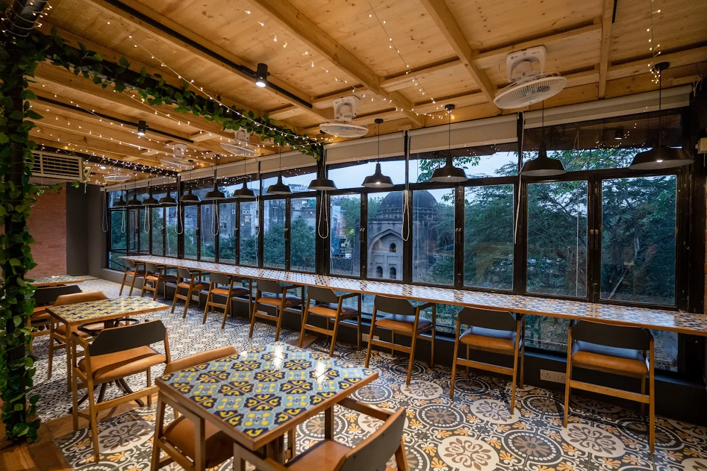

A simple guide to cafés, coffee stops and work-friendly spaces in South Delhi.
Shahpur Jat in South Delhi has quietly become a hub for cafés, studios and creative workspaces.
Between boutique stores and quiet lanes, visitors will find places suited for coffee breaks, casual meetings or focused work sessions.
This guide highlights a few well-known cafés and workspaces in the neighbourhood and what each place is best known for.
Quiet Café — Solchemi ⭐ 5.0
Solchemi is known for its calm environment and thoughtfully prepared food. Many visitors choose it when they want a quieter café where they can focus, read or work without the noise often found in busy coffee spots.
The café encourages longer visits, whether someone is spending time on a laptop, catching up with a friend or enjoying a slow meal. Along with coffee, Solchemi is also known for freshly prepared dishes that make it suitable for extended work or study sessions.
Best for: Quiet work sessions • Good food • Study time • Long conversations
Market Café — Cafe Red ⭐ 4.1
Cafe Red sits within the main market lane of Shahpur Jat, making it easy to stop by while exploring the neighbourhood’s boutiques and design stores.
Because of its central location, the café often attracts visitors looking for a quick coffee break while moving through the busy market area.
Best for: Market breaks • Quick coffee • Social meetups
Coffee Stop — Alayna Café ⭐ 4.8
Alayna focuses primarily on coffee and provides a relaxed setting for shorter visits. Many people stop by for a quick drink while walking through the neighbourhood.
Compared to larger cafés, the space works best for shorter stays where the focus is enjoying coffee rather than longer work sessions.
Best for: Coffee • Short visits • Casual catch-ups
Creative Workspace — Spaceout ⭐ 4.4

Spaceout blends the feel of a café with the flexibility of a creative workspace. The environment attracts freelancers, designers and people working on independent projects.
Because of its workspace-oriented setup, the café is often used for collaborative work sessions or informal creative meetings.
Best for: Freelancers • Creative work • Informal coworking
Coworking — USCO ⭐ 4.7
USCO provides a structured coworking environment with desks, meeting rooms and workspace infrastructure for longer workdays.
Unlike cafés, coworking spaces like USCO are designed for productivity over extended periods and are commonly used by startups, freelancers and small teams.
Best for: Full workdays • Meetings • Professional workspace
Quick Comparison of Cafés & Workspaces
Place
Type
Atmosphere
Good For
Food / Coffee
Rating
Solchemi
Quiet café
Calm and relaxed
Work sessions • Reading
Good food + coffee
⭐ 5.0
Cafe Red
Market café
Lively market setting
Quick stops
Coffee + snacks
⭐ 4.1
Alayna
Coffee stop
Relaxed
Coffee breaks
Specialty coffee
⭐ 4.8
Spaceout
Creative café
Energetic workspace vibe
Freelancers
Coffee + light food
⭐ 4.4
USCO
Coworking
Professional
Full workdays
Coffee available
⭐ 4.7
Frequently Asked Questions
Which is the best quiet café in Shahpur Jat?
Solchemi is known for its calm environment and is often chosen by people looking for a quieter place to work or read.
Are there cafés in Shahpur Jat where people work?
Yes, several cafés are used for short work sessions including Solchemi and Spaceout.
Which café is located in the main market lane?
Cafe Red sits directly within the Shahpur Jat market area.
Where can I get coffee in Shahpur Jat?
Many cafés serve coffee in the neighbourhood including Alayna Café which focuses primarily on coffee.
Is there a coworking space in Shahpur Jat?
Yes, USCO offers coworking desks, meeting rooms and workspace facilities.
Which cafés are near South Extension or Hauz Khas?
Shahpur Jat is located close to South Extension and Hauz Khas, making these cafés easily accessible from those areas.